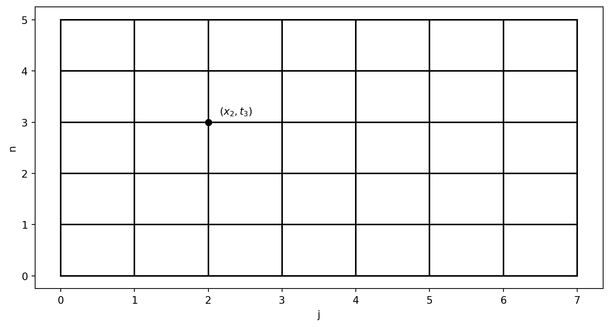
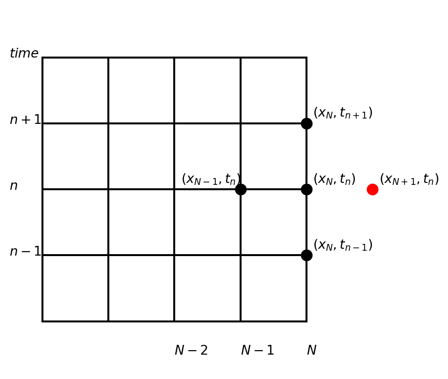
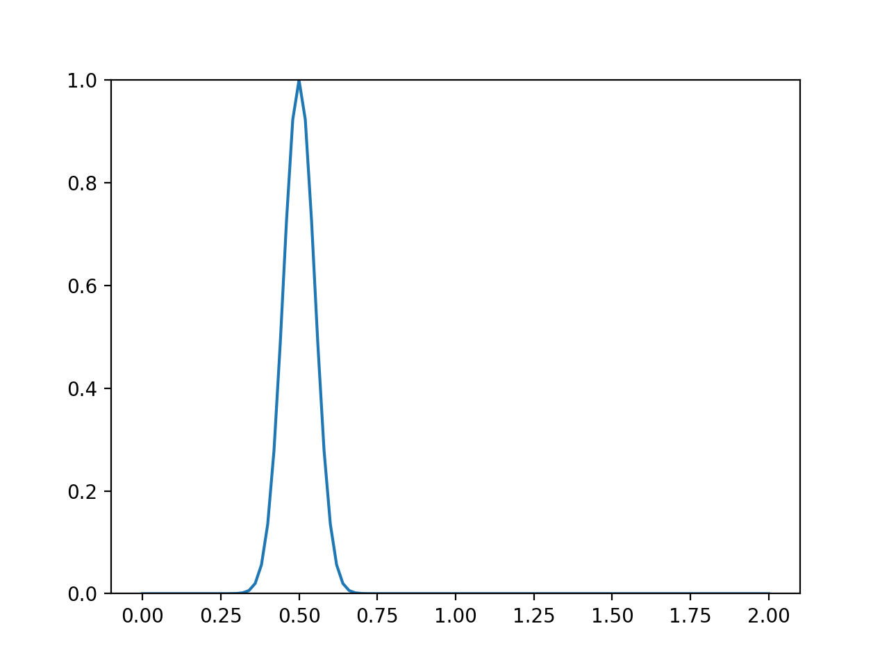

Finite difference methods for the wave equation
MATMEK-4270
Prof. Mikael Mortensen, University of Oslo
The wave equation is a partial differential equation (PDE)
\[ \frac{\partial^2 u}{\partial t^2} = c^2 \frac{\partial^2 u}{\partial x^2}. \]
where \(u(x, t)\) is the solution and \(c\) is the constant wavespeed. We will consider the time and space domains: \(t\in[0, T]\), \(x \in [0, L]\).
- The wave equation is an initial-boundary value problem!
- Two initial conditions required since two derivatives in time
- Two boundary conditions required since two derivatives in space
- The solutions are waves that can be written as \(u(x+ct)\) and \(u(x-ct)\)
Wave solution with different boundary conditions
Boundary conditions
Dirichlet (Fixed end)
\[ u(0, t) = u(L, t) = 0 \]
The wave will be reflected, but \(u\) will change sign. A nonzero Dirichlet condition is also possible, but will not be considered here.
Neumann (Loose end)
\[ \frac{\partial u}{\partial x}(0, t) = \frac{\partial u}{\partial x}(L, t) = 0 \]
The wave will be reflected without change in sign. A nonzero Neumann condition is also possible, but will not be considered here.
Boundary conditions continued
Open boundary (No end)
\[ \frac{\partial u(0, t)}{\partial t} - c \frac{\partial u(0, t)}{\partial x}= 0 \]
\[ \frac{\partial u(L, t)}{\partial t} + c \frac{\partial u(L, t)}{\partial x}=0 \]
The wave will simply pass undisturbed and unreflected through an open boundary.
Periodic boundary (No end)
\[ u(0, t) = u(L, t) \]
The solution repeats itself indefinitely.
Discretization
The simplest possible discretization is uniform in time and space
\[ t_n = n \Delta t, \quad n = 0, 1, \ldots, N_t \]
\[ x_j = j \Delta x, \quad j = 0, 1, \ldots, N \]
A mesh function in space and time is defined as
\[ u^n_j = u(x_j, t_n) \]
The mesh function has one value at each node in the mesh. For simplicity in later algorithms we will use the vectors
\[ u^n = (u^n_0, u^n_1, \ldots, u^n_N)^T, \]
which is the solution vector at time \(t_n\).
A second order accurate discretization of the wave equation is
\[ \frac{u^{n+1}_j - 2u^n_j + u^{n-1}_j}{\Delta t^2} = c^2 \frac{u^n_{j+1}-2 u^{n}_j + u^n_{j-1}}{\Delta x^2} \]
The finite difference stencil makes use of 5 neighboring points
\[ \frac{u^{n+1}_j - 2u^n_j + u^{n-1}_j}{\Delta t^2} = c^2 \frac{u^n_{j+1}-2 u^{n}_j + u^n_{j-1}}{\Delta x^2} \]
Can only be used for internal points
The finite difference stencil is not used at the spatial boundary

\[ \frac{u^{n+1}_N - 2u^n_N + u^{n-1}_N}{\Delta t^2} = c^2 \frac{\color{red}u^n_{N+1} \color{black} -2 u^{n}_N + u^n_{N-1}}{\Delta x^2} \]
- Used at the boundary the regular stencil will contain a ghost node
- But at the boundary we use boundary conditions and do not solve the PDE!
We use a marching method in time
Initialize \(u^0\) and \(u^1\)
for n in range(\(1, N_t-1\)):
- for j in range(\(1, N-1\)):
- \(u^{n+1}_j = 2u^n_j - u^{n-1}_j + \left(\frac{c \Delta t}{ \Delta x}\right)^2 (u^{n}_{j+1}-2u^n_{j} + u^n_{j-1})\)
- for j in range(\(1, N-1\)):
and apply the chosen boundary conditions.
All the indices makes it a bit messy. Lets make use of a differentiation matrix for the spatial dimension! And the Courant (or CFL) number
\[ \overline{c} = \frac{c \Delta t}{\Delta x} \]
Use differentiation matrix to simplify the notation
We define the second differentiation matrix without the scaling \(1/(\Delta x)^2\) such that
\[\small D^{(2)} = \begin{bmatrix} -2 & 1 & 0 & 0 & 0 & \cdots & 0 \\ 1 & -2 & 1 & 0 & 0 & \cdots & 0 \\ 0 & 1 & -2 & 1 & 0 & \cdots & 0 \\ \vdots & & \ddots & \ddots & \ddots & &\vdots \\ 0 & \cdots & 0 & 1& -2& 1& 0 \\ 0 & \cdots & 0& 0& 1& -2& 1 \\ 0 & \cdots & 0 & 0 & 0 & 1 & -2 \\ \end{bmatrix} \]
and thus row \(0 < j < N\) of \(D^{(2)}u^n\) becomes
\[ (D^{(2)}u^n)_j = u^n_{j+1}-2u^n_j+u^n_{j-1} \]
The vectorized marching method becomes
Initialize \(u^0\) and \(u^1\)
for n in range(\(1, N_t-1\)):
- \(u^{n+1} = 2u^n-u^{n-1} + \underline{c}^2 D^{(2)} u^n\)
- Apply boundary conditions to \(u^{n+1}_0\) and \(u^{n+1}_N\)
- The boundary step can often, but not always, be incorporated into the matrix \(D^{(2)}\)
- Very easy to vectorize using the matrix vector product!
PDE solvers (of time-dependent problems) should use memory carefully
Note
- At any time we only need to store three vectors: \(u^{n+1}, u^{n}\) and \(u^{n-1}\).
- Memory requirement = \(3(N+1)\) floating point numbers
- Storing all time steps requires \((N_t+1) \times (N+1)\) floating point numbers
- Not a huge problem for our case, but for 2 or 3 spatial dimensions it is very important!
Implementation - A low-memory marching method needs to update solution vectors
Allocate three vectors \(u^{nm1}, u^n, u^{np1}\), representing \(u^{n-1}, u^n, u^{n+1}\).
Initialize \(u^0\) and \(u^1\) by setting \(u^{nm1}=u^0, u^n=u^1\)
for n in range(\(1, N_t-1\)):
- \(u^{np1} = 2u^n-u^{nm1} + \underline{c}^2 D^{(2)} u^n\)
- Apply boundary conditions to \(u^{np1}_0\) and \(u^{np1}_N\)
- Update to next iteration:
- \(u^{nm1} \gets u^n\)
- \(u^n \gets u^{np1}\)
In Python
Set up solver
import numpy as np
from scipy import sparse
import sympy as sp
x, t = sp.symbols('x,t')
N = 100
Nt = 500
L = 2
c = 1 # wavespeed
dx = L / N
CFL = 1.0
dt = CFL*dx/c
xj = np.linspace(0, L, N+1)
unm1, un, unp1 = np.zeros((3, N+1))
D2 = sparse.diags([1, -2, 1], [-1, 0, 1], (N+1, N+1))
u0 = sp.exp(-200*(x-L/2+t)**2)Solve by marching method
Store results at intermediate intervals for plotting
For example every tenth time step. Normally you do not need every time step to get a good animation.
Create animation after the simulation is finished

def animation(data):
from matplotlib import animation
fig, ax = plt.subplots()
v = np.array(list(data.values()))
t = np.array(list(data.keys()))
save_step = t[1]-t[0]
line, = ax.plot(xj, data[0])
ax.set_ylim(v.min(), v.max())
def update(frame):
line.set_ydata(data[frame*save_step])
return (line,)
ani = animation.FuncAnimation(fig=fig, func=update, frames=len(data), blit=True)
ani.save('wavemovie.apng', writer='pillow', fps=5) # This animated png opens in a browserHow to implement the initial conditions?
To initialize a mesh function \(u^0\), we write \[ u^0 = I(x) \]
which represents
\[ u^0_j = I(x_j), \quad \forall \, j=0, 1, \ldots, N \]
How about the second condition \(\frac{\partial u}{\partial t}(x, 0) = 0\)?
Just like for the vibration equation there are several options. If you have an analytical solution \(I(x)\) you can specify:
one wave
\[ u^1 = I(x + c \Delta t) \]
Two waves
\[ u^1 = 0.5(I(x+c\Delta t) + I(x-c\Delta t)) \]
If you do not have analytic \(I(x)\), then what?
How to fix \(\frac{\partial u}{\partial t}(x, 0) = 0\), option 1
Use a forward difference
\[ \frac{\partial u}{\partial t}(x, 0) \approx \frac{u^1-u^0}{\Delta t}=0, \quad \text{such that} \quad u^1 = u^0 \]
Only first order accurate, but still a possibility.
Use a second order forward difference
\[ \frac{\partial u}{\partial t}(x, 0) \approx \frac{-u^2+4u^1-3u^0}{2 \Delta t}=0, \quad \text{such that} \quad u^1 = \frac{3u^0+u^2}{4} \]
Second order accurate, but implicit.
How to implement \(\frac{\partial u}{\partial t}(x, 0) = 0\), option 2
Use a second order central differece
\[ \frac{\partial u}{\partial t}(x, 0) = \frac{u^1-u^{-1}}{2 \Delta t}=0, \quad \text{such that} \quad u^1 = u^{-1} \]
and the PDE at \(n=0\)
\[ u^1 = 2u^0 - \color{red} u^{-1} \color{black} + \underline{c}^2 D^{(2)}u^{0} \]
Insert for \(u^{-1}=u^1\) to obtain
\[ u^1 = u^0 + \frac{\underline{c}^2}{2} D^{(2)}u^{0} \]
Second order accurate and explicit
How to fix boundary conditions?
We will consider 4 different types of boundary conditions
| Dirichlet | \(u(0, t)\) and \(u(L, t)\) |
| Neumann | \(\frac{\partial u}{\partial x}(0, t)\) and \(\frac{\partial u}{\partial x}(L, t)\) |
| Open | \(\frac{\partial u}{\partial t}(0, t)-c\frac{\partial u}{\partial x}(0, t) = 0\) and \(\frac{\partial u}{\partial t}(L, t)+c\frac{\partial u}{\partial x}(L, t) = 0\) |
| Periodic | \(u(L, t) = u(0, t)\) |
Note
Accounting for boundary conditions very often takes more than 50 % of the lines of code in a PDE solver!
Dirichlet boundary conditions
We need to fix \(u(0, t) = I(0)\) and \(u(L, t) = I(L)\) and start by fixing this at \(t=0\)
\[ u^0_0=I(0) \quad \text{and}\quad u^0_N=I(L) \]
Next, we compute
\[ u^1 = u^0 + \frac{\underline{c}^2}{2} D^{(2)}u^{0} \]
Here, if the first and last rows of \(D^{(2)}\) are set to zero, then \(u^1_0 = u^0_0\) and \(u^1_N=u^0_N\).
Next, for \(n=1, 2, \ldots, N_t-1\)
\[ u^{n+1} = 2u^n-u^{n-1} + \underline{c}^2 D^{(2)} u^n \]
Again, if the first and last rows of \(D^{(2)}\) are zero, then \(u^{n+1}_0 = u^0_0\) and \(u^{n+1}_N=u^0_N\) for all \(n\). The boundary values remain as initially set at \(t=0\).
Dirichlet boundary conditions summary
Set \(u^0=I(x)\) and define a modified differentiation matrix
\[\small \tilde{D}^{(2)} = \begin{bmatrix} \color{red}0 & \color{red}0 & \color{red}0 & \color{red}0 & \color{red}0 & \color{red}0 & \color{red}0 & \color{red}0 \\ 1 & -2 & 1 & 0 & 0 & 0 & 0 & \cdots \\ 0 & 1 & -2 & 1 & 0 & 0 & 0 & \cdots \\ \vdots & & & \ddots & & & &\cdots \\ \vdots & 0 & 0 & 0 & 1& -2& 1& 0 \\ \vdots & 0 & 0& 0& 0& 1& -2& 1 \\ \color{red}0 & \color{red}0 & \color{red}0 & \color{red}0 & \color{red}0 & \color{red}0 & \color{red}0 & \color{red}0 \\ \end{bmatrix} \]
Now boundary conditions will be ok at all time steps simply by:
Initialize \(u^0\) and compute \(u^1 = u^0+\frac{\underline{c}^2}{2}\tilde{D}^{(2)} u^0\). Set \(u^{nm1}=u^0, u^n=u^1\)
for n in range(\(1, N_t-1\)):
- \(u^{np1} = 2u^n-u^{nm1} + \underline{c}^2 \tilde{D}^{(2)} u^n\)
- Update to next iteration: \(u^{nm1} = u^n; u^n = u^{np1}\)
Dirichlet boundary conditions summary
Note
It is also possible to do nothing with \(D^{(2)}\) and simply fix the boundary conditions after updating all the internal points
Initialize \(u^{nm1}=u^0\) and compute \(u^n = u^1 = u^0+\frac{\underline{c}^2}{2}{D}^{(2)} u^0\).
Set \(u^{nm1}_0=u^n_0=0\) and \(u^{nm1}_N=u^n_N=0\).
for n in range(\(1, N_t-1\)):
- \(u^{np1} = 2u^n-u^{nm1} + \underline{c}^2 {D}^{(2)} u^n\)
- Set \(u^{np1}_0=0\) and \(u^{np1}_N=0\)
- Update to next iteration: \(u^{nm1} \gets u^n; u^n \gets u^{np1}\)
Note
Regular, unmodified \(D^{(2)}\), where the first and last rows are completely irrelevant.
Neumann boundary conditions
We need to fix \(\frac{\partial u}{\partial x}(0, t) = 0\) and \(\frac{\partial u}{\partial x}(L, t) = 0\). We already have \(u^0=I(x)\).
A second order central scheme at \(x=0\) is using ghost cell at \(j=-1\)
\[ \frac{\partial u}{\partial x}(0, t_n) = \frac{u^{n}_1 - u^n_{-1}}{2 \Delta x} = 0 \rightarrow u^n_{-1} = u^{n}_{1} \]
Use the ghost cell and the PDE to fix the Neumann condition
The PDE at the left hand side \(j=0\) using ghost cell:
\[ u^{n+1}_0 = 2u^{n}_0 - u^{n-1}_0 + \underline{c}^2(u^n_{1}-2u^n_0+u^n_{-1}) \]
Insert for \(u^{n}_{-1}=u^n_{1}\) and obtain
\[ u^{n+1}_0 = 2u^{n}_0 - u^{n-1}_0 + \underline{c}^2(2u^n_{1}-2u^n_0) \]
Note
Second order accurate and explicit. Can be implemented by modifying \(D^{(2)}\)!
Neumann at \(x=L\) is the same
\[ \frac{\partial u}{\partial x}(L, t_n) = \frac{u^{n}_{N+1} - u^n_{N-1}}{2 \Delta x} = 0 \rightarrow u^n_{N+1} = u^{n}_{N-1} \]
The PDE at the right hand side \(j=N\) using ghost cell:
\[ u^{n+1}_N = 2u^{n}_N - u^{n-1}_N + \underline{c}^2(u^n_{N+1}-2u^n_N+u^n_{N-1}) \]
Insert for \(u^{n}_{N+1}=u^n_{N-1}\) and obtain
\[ u^{n+1}_N = 2u^{n}_N - u^{n-1}_N + \underline{c}^2(2u^n_{N-1}-2u^n_N) \]
And for \(n=1\) we similarly get
\[ u^{1}_0 = u^{0}_0 +\frac{\underline{c}^2}{2}(2u^n_{1}-2u^n_0) \quad \text{and} \quad u^{1}_N = u^{0}_N + \frac{\underline{c}^2}{2}(2u^n_{N-1}-2u^n_N) \]
Neumann summary
Set \(u^0=I(x)\) and define a modified differentiation matrix
\[\small \tilde{D}^{(2)} = \begin{bmatrix} \color{red}-2 & \color{red}2 & \color{red}0 & \color{red}0 & \color{red}0 & \color{red}0 & \color{red}0 & \color{red}0 \\ 1 & -2 & 1 & 0 & 0 & 0 & 0 & \cdots \\ 0 & 1 & -2 & 1 & 0 & 0 & 0 & \cdots \\ \vdots & & & \ddots & & & &\cdots \\ \vdots & 0 & 0 & 0 & 1& -2& 1& 0 \\ \vdots & 0 & 0& 0& 0& 1& -2& 1 \\ \color{red}0 & \color{red}0 & \color{red}0 & \color{red}0 & \color{red}0 & \color{red}0 & \color{red}2 & \color{red}-2 \\ \end{bmatrix} \]
Now boundary conditions will be ok at all time steps simply by:
Initialize \(u^0\) and compute \(u^1 = u^0+\frac{\underline{c}^2}{2}\tilde{D}^{(2)} u^0\). Set \(u^{nm1}=u^0, u^n=u^1\)
for n in range(\(1, N_t-1\)):
- \(u^{np1} = 2u^n-u^{nm1} + \underline{c}^2 \tilde{D}^{(2)} u^n\)
- Update to next iteration: \(u^{nm1} \gets u^n; u^n \gets u^{np1}\)
Open boundary
The wave simply disappears through the boundary
\[ \frac{\partial u}{\partial t}(0, t) - c \frac{\partial u}{\partial x}(0, t) = 0 \quad \text{and} \quad \frac{\partial u}{\partial t}(L, t) + c \frac{\partial u}{\partial x}(L, t) = 0 \]
As for Neumann there are several ways to implement these boundary conditions. The simplest option is to solve the first order accurate
\[ \frac{u^{n+1}_0-u^{n}_0}{\Delta t} - c \frac{u^n_1-u^{n}_{0}}{\Delta x} = 0 \]
such that
\[ u^{n+1}_0 = u^n_0 + \frac{c \Delta t}{\Delta x}(u^n_1-u^n_0) \]
Second order option
\[ \frac{u^{n+1}_0-u^{n-1}_0}{2\Delta t} - c \frac{-u^n_2+4u^n_1-3u^{n}_{0}}{2 \Delta x} = 0 \]
Solve for the boundary node \(u^{n+1}_0\)
\[ u^{n+1}_0 = u^{n-1}_0 + \frac{c \Delta t}{\Delta x}(-u^n_2+4u^n_1-3u^n_0) \]
Nice option, but difficult to incorporate in the \(D^{(2)}\) matrix, since there is no way to modify the first and last rows of \(D^{(2)}\) such that
\[ u^{n+1}_0 = 2u^n_0-u^{n-1}_0 + \underline{c}^2 (D^{(2)} u^n)_0 \]
Second second order option
Use central, second order scheme
\[ \frac{u^{n+1}_0-u^{n-1}_0}{2\Delta t} - c \frac{u^n_1-u^{n}_{-1}}{2 \Delta x} = 0 \]
and isolate the ghost node \(u^{n}_{-1}\):
\[ \color{red}u^{n}_{-1} \color{black} = u^n_1 - \frac{1}{\underline{c}}(u^{n+1}_0 - u^{n-1}_0) \]
Use regular PDE at the boundary that includes the ghost node:
\[ u^{n+1}_0 = 2u^n_0 - u^{n-1}_0 + \underline{c}^2(u^{n}_1-2u^n_0+\color{red}u^n_{-1}\color{black}) \]
This gives an equation for \(u^{n+1}_0\) that fixes the open boundary condition:
\[ u^{n+1}_0 = 2(1-\underline{c})u^n_0 - \frac{1-\underline{c}}{1+\underline{c}}u^{n-1}_0 + \frac{2 \underline{c}^2}{1+\underline{c}}u^{n_1}_1 \]
Open boundary conditions
Left boundary:
\[ u^{n+1}_0 = 2(1-\underline{c})u^n_0 - \frac{1-\underline{c}}{1+\underline{c}}u^{n-1}_0 + \frac{2 \underline{c}^2}{1+\underline{c}}u^{n_1}_1 \]
Right boundary:
\[ u^{n+1}_N = 2(1-\underline{c})u^n_N - \frac{1-\underline{c}}{1+\underline{c}}u^{n-1}_N + \frac{2 \underline{c}^2}{1+\underline{c}}u^{n_1}_{N-1} \]
Both explicit and second order. But not possible to implement into the matrix such that
\[ u^{n+1} = 2u^n-u^{n-1} + \underline{c}^2 D^{(2)} u^n \]
Implementation open boundaries
Initialize \(u^0\) and compute \(u^1 = u^0+\frac{\underline{c}^2}{2}{D}^{(2)} u^0\). Set \(u^{nm1}=u^0, u^n=u^1\)
for n in range(\(1, N_t-1\)):
- \(u^{np1} = 2u^n-u^{nm1} + \underline{c}^2 {D}^{(2)} u^n\)
- \(u^{np1}_0 = 2(1-\underline{c})u^n_0 - \frac{1-\underline{c}}{1+\underline{c}}u^{nm1}_0 + \frac{2 \underline{c}^2}{1+\underline{c}}u^{nm1}_1\)
- \(u^{np1}_N = 2(1-\underline{c})u^n_N - \frac{1-\underline{c}}{1+\underline{c}}u^{nm1}_N + \frac{2 \underline{c}^2}{1+\underline{c}}u^{nm1}_{N-1}\)
- Update to next iteration: \(u^{nm1} \gets u^n; u^n \gets u^{np1}\)
Note
There is no need to use a modified \(D^{(2)}\). The two updates of \(u^{np1}_0\) and \(u^{np1}_N\) will overwrite anything computed in the first step.
Periodic boundary conditions
A periodic solution is a solution that is repeating itself indefinitely. For example \(u(x) = \sin(2\pi x)\):

We solve the problem for example for \(x \in [0, 1]\), but the actual solution will be like above, with no boundaries.
Note
A periodic domain is also referred to as a domain with no boundaries.
A periodic mesh in time
\[u(t_N) = u(0) \quad \text{or} \quad u^N = u^0\]
Note
There are only \(N\) unknowns \(u^0, u^1, \ldots, u^{N-1}\) for a mesh with \(N+1\) nodes.
Consider the discretization of \(u''\)
At the left hand side of the domain, the point to the left of \(u^0\) is \(u^{N-1}\)
\[ u''(0) \approx \frac{u^1 - 2u^0 + \color{red}u^{-1}}{h^2} = \frac{u^1 - 2u^0 + \color{red}u^{N-1}}{h^2} \]
At the right hand side of the domain the point to the right of \(u^{N-1}\) is \(u^N=u^0\)
\[ u''(t_{N-1}) \approx \frac{\color{red}u^N \color{black} - 2u^{N-1} + u^{N-2}}{h^2} = \frac{\color{red}u^0 \color{black} - 2u^{N-1} + u^{N-2}}{h^2} \]
Periodic boundary conditions can be implemented in the matrix \(D^{(2)} \in \mathbb{R}^{N+1 \times N+1}\)
\[\small \tilde{D}^{(2)} = \begin{bmatrix} \color{red}-2 & \color{red}1 & 0 & 0 & 0 & 0 & \color{red}1 & 0 \\ 1 & -2 & 1 & 0 & 0 & 0 & 0 & \cdots \\ 0 & 1 & -2 & 1 & 0 & 0 & 0 & \cdots \\ \vdots & & & \ddots & & & &\cdots \\ \vdots & 0 & 0 & 0 & 1& -2& 1& 0 \\ \vdots & 0 & 0& 0& 0& 1& -2& 1 \\ 0 & 0 & 0 & 0 & 0 & 0 & 1 & -2 \\ \end{bmatrix} \]
Note that the matrix expects \(\boldsymbol{u} = (u^0, u^1, \ldots, u^{N-1}, u^N)\), even though \(u^0=u^N\). The last row in \(\tilde{D}^{(2)}\) is thus irrelevant, because we wil set \(u^0=u^N\) manually.
Implementation periodic boundaries
Initialize \(u^0\) and compute \(u^1 = u^0+\frac{\underline{c}^2}{2}\tilde{D}^{(2)} u^0\). Set \(u^{nm1}=u^0, u^n=u^1\)
for n in range(1, \(N_t-1\)):
- \(u^{np1} = 2u^n-u^{nm1} + \underline{c}^2 \tilde{D}^{(2)} u^n\)
- \(u^{np1}_N = u^{np1}_0\)
- Update to next iteration: \(u^{nm1} = u^n; u^n = u^{np1}\)
Periodic wave
Properties of the wave equation
\[ \frac{\partial^2 u}{\partial t^2} = c^2 \frac{\partial^2 u}{\partial x^2} \]
If the initial condition is \(u(x, 0)=I(x)\) and \(\frac{\partial u}{\partial t}(x, 0)=0\), then the solution at \(t>0\) is
\[ u(x, t) = \frac{1}{2}\left( I(x-ct) + I(x+ct)\right) \]
These are two waves - one traveling to the left and the other traveling to the right
If the initial condition \(I(x)=e^{i k x}\), then
\[ u(x, t) = \frac{1}{2} \left(e^{ik(x-ct)} + e^{ik(x+ct)} \right) \]
is a solution
Representation of waves as complex exponentials
If the initial condition is a sum of waves (superposition, each wave is a solution of the wave equation)
\[ I(x) = \sum_{k=0}^K a_k e^{i k x} = \sum_{k=0}^K a_k \left(\cos kx + i \sin kx\right) \]
for some \(K\), then the solution is
\[ u(x, t) = \frac{1}{2}\sum_{k=0}^K a_k \left(e^{ik(x-ct)} + e^{ik(x+ct)}\right) \]
We will analyze one component \(e^{ik(x+ct)} = e^{ikx+ \omega t}\), where \(\omega = kc\) is the frequency in time. This is very similar to the investigation we did for the numerical frequency for the vibration equation.
Assume that the numerical solution is a complex wave
\[ u(x_j, t_n) = u^{n}_j = e^{ik(x_j+\tilde{\omega} t_n)} \]
- How accurate is \(\tilde{\omega}\) compared to the exact \(\omega=kc\)?
- What can be concluded about stability?
Note that the solution is a recurrence relation
\[ u^n_j = e^{ikx_j} e^{i\tilde{\omega} n \Delta t} = (e^{i\tilde{\omega} \Delta t})^n e^{ikx_j} \]
with an amplification factor \(A = e^{i\tilde{\omega} \Delta t}\) such that
\[ u^n_j = A^n e^{ikx_j} \]
Numerical dispersion relation
We can find \(\tilde{\omega}\) by inserting for \(u^n_j = e^{ik(x_j+\tilde{\omega}t_n)}\) in the discretized wave equation
\[ \frac{u^{n+1}_j - 2u^n_j + u^{n-1}_j}{\Delta t^2} = c^2 \frac{u^n_{j+1}-2 u^{n}_j + u^n_{j-1}}{\Delta x^2} \]
This is a lot of work, just like it was for the vibration equation. In the end we should get
\[ \tilde{\omega} = \frac{2}{\Delta t} \sin^{-1}\left(C \sin \left(\frac{k \Delta x}{2}\right)\right) \]
where the CFL number is \(C = \frac{c \Delta t}{\Delta x}\)
- \(\tilde{\omega}(k, c, \Delta x, \Delta t)\) is the numerical dispersion relation
- \(\omega = kc\) is the exact dispersion relation
- We can compare the two to investigate numerical accuracy and stability
Stability
A simpler approach is to insert for \(u^n_j = A^n e^{ikx_j}\) directly in
\[ \frac{u^{n+1}_j - 2u^n_j + u^{n-1}_j}{\Delta t^2} = c^2 \frac{u^n_{j+1}-2 u^{n}_j + u^n_{j-1}}{\Delta x^2} \]
and solve for \(A\). For stability we need \(|A|=1\). We get
\[ \frac{\left(A^{n+1} - 2A^n + A^{n-1} \right) e^{ikx_j}}{\Delta t^2} = c^2 A^n \frac{e^{ik(x_j+\Delta x)} - 2e^{ikx_j} + e^{ik(x_j-\Delta x)}}{\Delta x^2} \]
Divide by \(A^ne^{ikx_j}\), multiply by \(\Delta t^2\) and use \(C=c\Delta t/\Delta x\) to get
\[ A -2 + A^{-1} = C^2 (e^{ik \Delta x} - 2 + e^{-ik\Delta x}) \]
continue on next slide
Stability
\[ A + A^{-1} = 2 + C^2 (e^{ik \Delta x} - 2 + e^{-ik\Delta x}) \]
Use \(e^{ix}+e^{-ix}=2\cos x\) to obtain
\[ A + A^{-1} = 2 + 2 C^2(\cos k\Delta x - 1) \]
This is a quadratic equation to solve for A. Using \(\beta=2(1+C^2 (\cos(k\Delta x)-1))\) we get that
\[ A = \frac{\beta \pm \sqrt{\beta^2-4}}{2} \]
We see that \(|A| = 1\) for any real numbers \(-2 \le \beta \le 2\). (Also, \(\beta < -2 \rightarrow\) negative \(A\)).
For all real numbers \(-2 \le \beta \le 2\)
\[ |\beta \pm \sqrt{\beta^2-4}| = 2 \] since \(|\beta \pm \sqrt{\beta^2-4}| = |\beta + i \sqrt{4-\beta^2}| = \sqrt{\beta^2 + 4 - \beta^2} = 2\)
For \(|A| = 1\) and stability we need \(-2 \le \beta \le 2\) and thus
\[ -2 \le 2(1+C^2(\cos(k\Delta x)-1)) \le 2 \]
Rearrange to get that
\[ -2 \le C^2 (\cos (k\Delta x)-1) \le 0 \]
Since \(\cos(k\Delta x)\) can at worst be \(-1\) we get that the positive real CFL number must be smaller than 1
\[ C \le 1 \]
Hence (since \(C=c\Delta t/\Delta x\)) for stability we require that
\[ \Delta t \le \frac{\Delta x}{c} \]